Álgebra: binomios, desigualdades, ecuaciones y función cuadrática
Ecuaciones
Una ecuación algebraica es una combinación de uno o más términos separados con un símbolo de “igualdad”, es decir el símbolo “=”. Los términos son las expresiones algebraicas (monomios, bi o trinomios etc) que -como sabemos- están compuestas de constantes y variables. Los términos pueden ser numéricos, alfa, expresión numérica, etc.. Los términos están conectados uno con el otro con la ayuda de suma (+) o símbolos de resta (-)
Ejemplo 1:
x + 4 = 7
Lo que esta ecuación algebraica señala es que queremos hallar una variable o incógnita en este caso simbolizada por x, sabiendo que este número sumado a 4, da como resultado 7. La pregunta entonces es: ¿qué número, sumado a 4, da como resultado 7?
Tipos de ecuaciones
Ecuaciones de primer grado
| Formula: Ax + B = 0 |
Ejemplo 1: 2x - 1 = 5x + 8
1. Escribimos los monomios con incógnita en la izquierda y los que no tienen incógnita en la derecha.
2. Cómo 5x está sumando en la derecha, pasa restando a la izquierda. El número 1 de la izquierda está restando, así que pasa sumando al otro lado:
2x - 5x = 8 + 1
3. Sumamos los monomios en cada lado: -3x = 9
Es decir, -3 * x = 9
4. Para despejar la incógnita, debemos pasar el coeficiente de la incógnita a la derecha. Como está multiplicando, pasa dividiendo (con el signo negativo incluido):
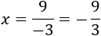
5. Finalmente, simplificamos la fracción y nos da la solución: x = -3
6. Comprobamos la solución sustituyendo en la ecuación:
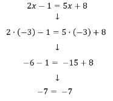
Ejemplo 2: -2(3x -2) = -2
1. Eliminamos el paréntesis, pero debemos tener en cuenta que el signo del número que multiplica al paréntesis es negativo
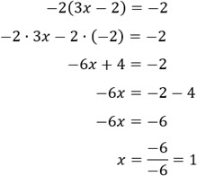
2. Recordemos que el cociente de dos números negativos es un número positivo
Ejemplo 3: 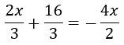
1. Si multiplicamos por 3 la ecuación, desaparecen las fracciones cuyo denominador es 3. Pero quedará la fracción cuyo denominador es 2. Para eliminar los denominadores de un solo paso, multiplicamos la ecuación por el mínimo común múltiplo de los denominadores.
El mínimo común múltiplo de 2 y 3 es 6. Por tanto, multiplicamos por 6 la ecuación:
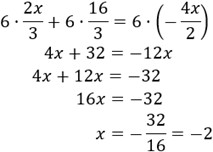
Ecuaciones de segundo grado
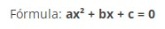Ejemplo 1: 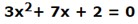
1. Teniendo en cuenta que, en este ejemplo, b = 7, c = 2 y, a = 3 , aplicando la formula general
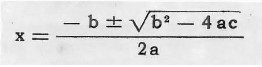
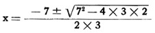
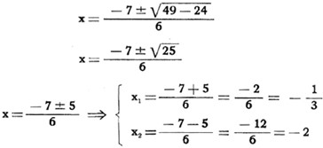
Ejemplo 2: 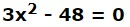
1. La resolución se efectúa directamente por trasposición de términos. En efecto: para despejar x se traspone el término -48 que pasa al segundo miembro con el signo más y se tiene:
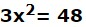
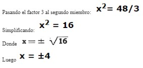
Ejemplo 3: 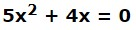
1. Se saca el factor común x
X( 5x)+4) = 0
Como el primer miembro es el producto de dos factores: el factor x y el factor (5 x + 4), para que el producto de los mismos sea 0, como impone la ecuación, debe ser necesariamente cero por lo menos uno de los factores. Es decir, debe verificarse una de las dos condiciones siguientes:
x = 0 y 5x + 4 = 0
Despejando x, se tiene:
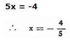
Ecuaciones de tercer grado
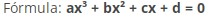Ejemplo 1: 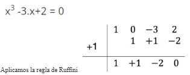
De este modo, ya podemos ver como x=1 puede ser una de las posibles soluciones.
Nos quedamos con la ecuación de segundo grado resultante obtenida al factorizar la primera por la regla de Ruffini:
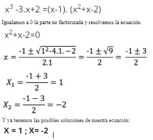
Ecuaciones de cuarto grado o bicuadrada
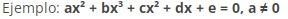Se aplica el mismo proceso de las ecuaciones de tercer grado
Ecuaciones exponenciales
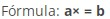Ecuaciones logarítmicas
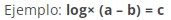Ecuaciones trigonométricas
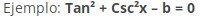Ecuaciones con radicales
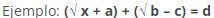Ecuaciones con racionales
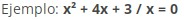Ecuaciones con fraccionarias
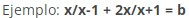Información de: